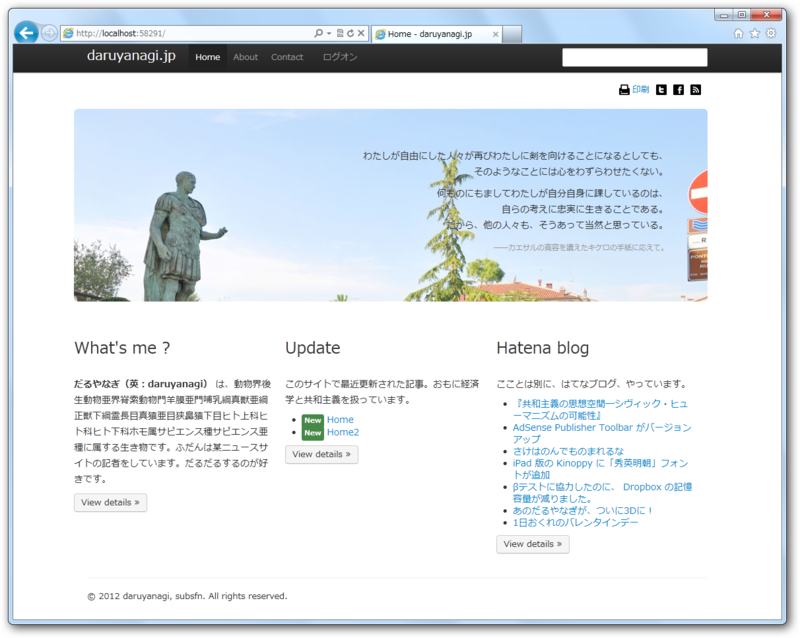
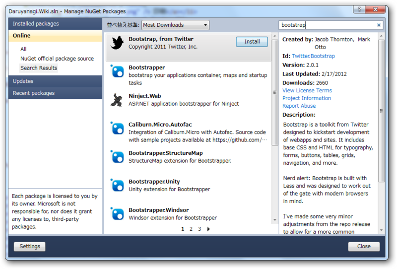
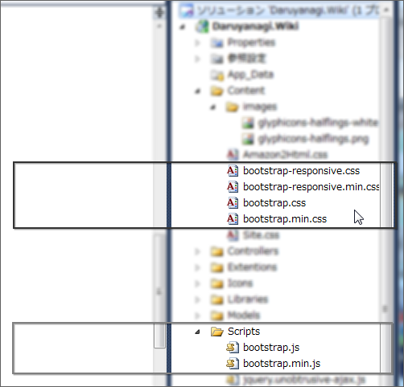

Twitter Bootstrap を v2.0 にしてみた
執筆日時：
米Twitterは1月31日、CSS/HTMLフレームワーク「Bootstrap 2.0」をリリースしたと発表した。画面を格子状に分割して要素を配置する「グリッドレイアウト」を容易に実装できるほか、WebサイトやWebアプリケーション開発に向けたUIコンポーネントが多く含まれている。
米Twitter、同社発のCSS/HTMLフレームワーク「Bootstrap 2.0」を公開 - SourceForge.JP Magazine : オープンソースの話題満載
ちょっと様子見していたのだけど、サクっと乗り換えてみた。

ドロップダウンメニューやタブが動かなくなった ＼(^o^)／
結構色々変わっていて、後方互換性はないみたい。既存のビューを書き換えるのには、多少苦労した。
Bootstrap 2.0では、ボタン、ボタングループ、ドロップダウン、タブなどのコンポーネントが書き直されている。また、グリッドシステムではカラムの数が16から12カラムとなり、画面の大きさなどに応じて柔軟に調整するレスポンシブアプローチを導入、スマートフォン、タブレットなどへの対応が強化された。
フォームスタイルも一新され、jQuery UIなどのツールとの互換性を強化した新しいテーブルスタイルも用意された。Collapse、Crousel、TypeaheadなどのJavaScriptプラグインも加わっている。必要な機能を選んで利用するカスタマイズ版も新たに用意された。
とくにカラム数の変更は......描き直しが面倒くさい。ドロップダウンメニューのデザインは新しいほうが格好いいな。しかし、@Html.EditorFor() ではHTMLタグの属性を指定できないんだなぁ。クラス名がないと、ちゃんとデザインしてくれないのでこまる。とりあえず、JavaScript で後からチョコチョコッとクラスをつけておいた。
$(function () {
$('form').addClass("form-horizontal");
$('label').addClass("control-label");
$('input').addClass("input-xlarge");
$('textarea').addClass("input-xlarge");
});
なお、Twitter Bootstrap は、Visual Studio/WebMatrix ならば Nuget で簡単にインストールできる（プラグインは含まれていない）。ダウンロード＆配置の手間が少しだけ省けるので試すべし。
